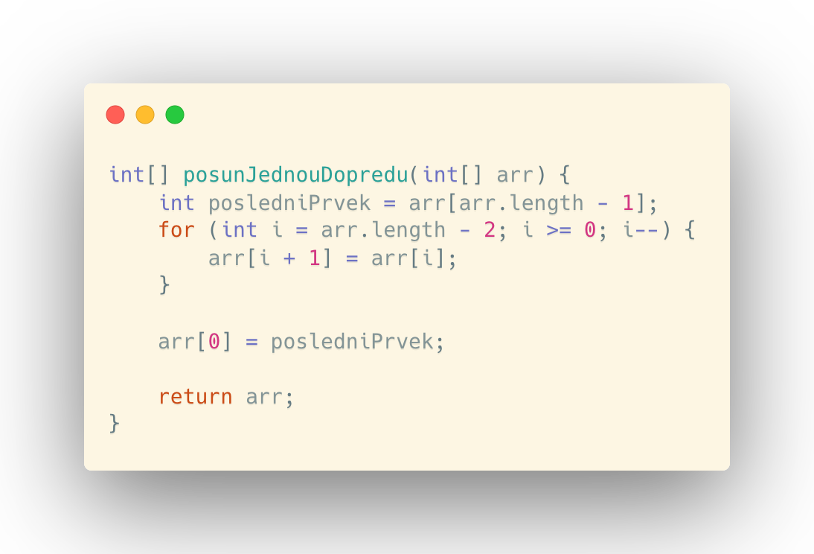
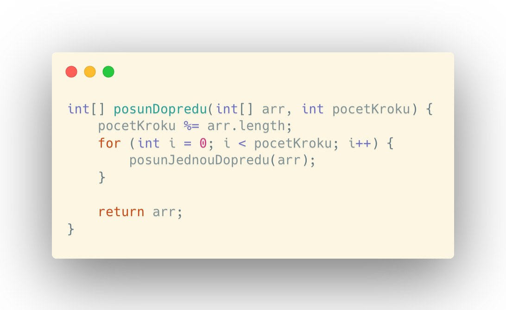

V této kapitole se podíváme na základní techniky při práci s daty, které program dostane v poli.
ROZDĚLENÍ ALGORITMŮ
Dříve, než se pustíme do tvoření algoritmů, je nutné si uvědomit, jakým způsobem tyto algoritmy vlastně rozdělujeme z hlediska paměťových nároků.
Algoritmy můžeme rozdělit do dvou základních kategorií na:
- ON SITE ALGORITMY
- ALGORITMY, KTERÉ NEPRACUJÍ ON SITE
On site algoritmy zpracovávají data v poli bez využití dalších polí/seznamů, do kterých mezivýpočty ukládají.
Algoritmy nepracující on site využívají k práci s daty další datové struktury. Jsou zcela jistě náročnější na paměť, za to však na úkor paměti ušetří leckdy spousty výpočtů navíc.
CYKLICKÝ POSUN PRVKŮ
Tento algoritmus v hlavičce metody dostává pole, ve kterém chceme prvky posunout. Pro prvotní pochopení budeme předpokládat, že máme posunout prvky o jednu pozici dopředu. Poslední prvek se logicky přesune na začátek pole. V této verzi bude mít algoritmus asymptotickou časovou složitost O(n). Algoritmus vyjme poslední prvek pole a následně jedním cyklem projde od druhého posledního prvku pole a nastaví jeho hodnotu na prvek pole za sebou. Nakonec na začátku vyjmutý prvek vloží na první pozici pole.
Pokud bychom chtěli vytvořit obecnější algoritmus, který by dokázal posunout prvek o libovolný počet kroků dopředu, je důležité si uvědomit změnu časové složitosti. Dala by se vytvořit metoda, jež posun o 1 provede tolikrát, kolikrát uživatel zadá v parametru typu int. Pak by algoritmus mohl mít asymptotickou časovou složitost O(n2), O(n3), O(n4), .... Záleželo by na počtu kroků, které algoritmus provede dle vstupu uživatele. Mohlo by se totiž stát, že uživatel zadá číslo větší, než je počet prvků v poli. Proto je potřeba toto ošetřit a zkrátit tak maximální časovou složitost jen na O(n2). Lze to zajistit tím, že provedeme modulo operaci počtu kroků od uživatele délkou vstupního pole. Pak by algoritmus mohl vypadat takto:
Všimněme si, že je algoritmus v paměti stále využívá stejné místo v paměti pro práci s polem, ale neklonuje ho pro každé volání metody.
Pokud bychom chtěli vytvořit algoritmus, který bude posouvat prvky dozadu, bude fungovat velice podobně. Ze začátku však vyjme první prvek a pole bude procházet zepředu od druhého prvku a prvky bude dávat na index za sebou. Na konci před vrácením pole vyjmutý prvek umístí na poslední pozici pole.
TŘÍZENÍ HODNOT V POLI DO KATEGORIÍ
Představme si, že jsme dostali pole a máme roztřídit hodnoty z leva na lichá a sudá čísla. K takovému úkolu lze použít takzvanou metodu dvou ukazovátek. Jeden cyklus (první ukazovátko) prochází pole zleva a kontroluje, zda jsou čísla lichá. To rozhodne na základě výpočtu (arr[i] % 2 != 0). Pokud tato podmínka platí, apk je číslo liché. Když narazí na liché číslo, počká na druhé ukazovátko. Druhý cyklus (druhé ukazovátko) prochází pole od zprava a kontroluje, zda jsou čísla sudá (arr[j] % 2 == 0). Pokud podmínka neplatí, pak počká na první ukazovátko.
Když na sebe obě ukazovátka čekají, vymění si hodnoty na svých indexech a pokračují dál ve svých kontrolách. Pokračují do doby, dokud nekontrolují číslo na stejném indexu v poli. Tzn. dokud se obě ukazovátka nepotkají. Algoritmus má časovou složitost O(n).
Pokud máme setřídit tímto způsobem více kategorií, pak roztřídím roztřídíme nejdříve kategorii, jež má být nejvíce vlevo se zbytkem vpravo. Následně třídíme již setřízenou kategorii a novou s ostatními vpravo.
POČET RŮZNÝCH HODNOT V POLI
Pokud máme zjistit počet různých hodnot v poli, můžeme k tomuto úkolu přistoupit třemi základními způsoby.
- Můžeme procházet pole a stejné hodnoty vyškrtat (nastavit na null v případě objektů nebo s čísly na hodnotu, která se v poli nemůže vyskytnout). Poté procházím pole znovu a pokračuji s první nalezenou hodnotou stejně. Tímto postupen dosáhneme nejhůře asymptotické časové složitosti O(n2).
- Druhý způsob je procházení pole, kdy najdeme minimum. Při dalším opakování tohoto postupu hledáme nové minimum. Mezi opakováními zvedáme počítadlo o 1. Na konci programu odpovídá hodnota počítadla počtu různých hodnot. Tento způsob nám práci nijak neušetřil a je stejná jako předtím tzn. O(n2)
- Třetí způsob již konečně ušetří část práce, dokáže totiž požadovanou hodnotu najít v čase O(n * log n). Vstupní pole nejdříve seřadíme dle velikosti, poté ho projdeme jedním cyklem a pokaždé, když najdeme novou hodnotu, zvýšíme počítadlo o 1. Stejně jako v předchozím způsobu, i zde hodnata počítadla odpovídá počtu různých hodnot v poli.